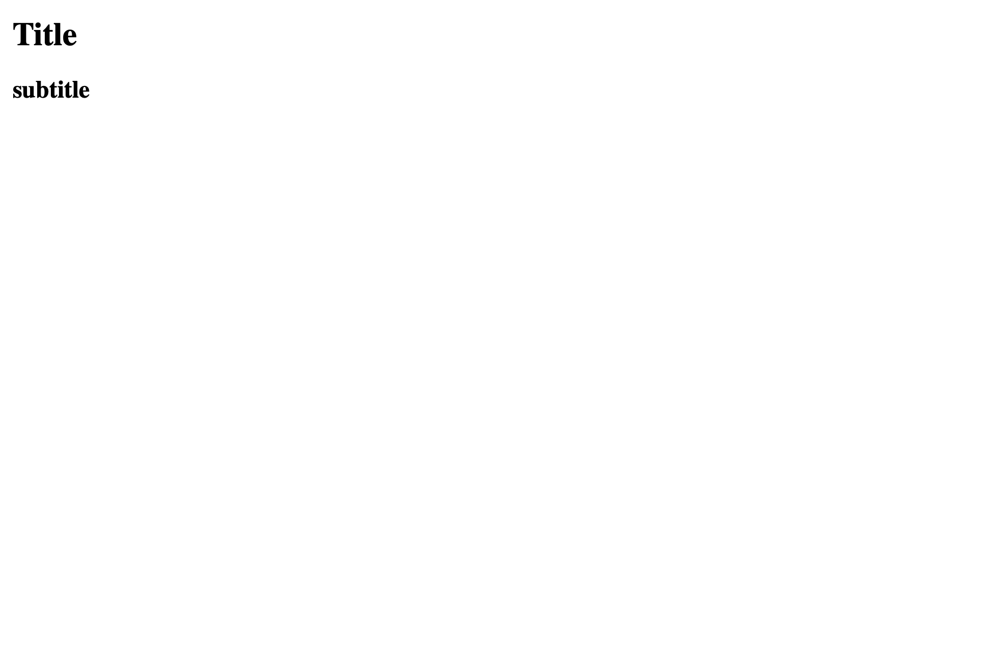
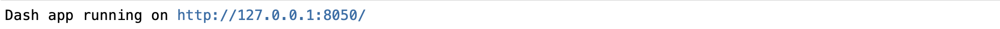

Dash - introduction¶
Plotly’s Dash is a library to build interactive and reactive web-based dashboards/applications for data analysis, more specifically for visualization. The framework allows to build advanced visualization tools, which will react to new inputs or altered preferences. Dash is built upon other languages, but allows to set up apps using only python.
Applications usually consist of two parts: a server, that is where the calculations etc. are made, and a user interface (UI). The UI is everything the user can see and interact with and is called layout in dash. For very basic dashboards, all one needs to do is integrating an element, like a bit of text or a graphic.
Installation¶
Standard package to install is ‘dash’.
However, since we are using jupyter in this course, the according package used throughout this chapter is jupyter-dash. This package is made specifically for jupyter and lets us view the apps inside notebooks. The syntax is the same for both packages. What you can do in jupyter_dash, you can do in any interpreter using dash. Also, we need some components of the standard dash, so both need to be installed anyway.
Caution
jupyter notebook cannot display several apps in one notebook.
The book format used here cannot display apps at all. Therefore, instead of the respective apps, sometimes a picture of the app as it would be displayed is shown. In order to view the actual apps, copy the respective code and run in a notebook yourself (uncomment app.run(...)).
Basic usage¶
Dash provides predefined elements for creating an UI. They come in open source libraries like the dcc_core_components and dash_html_components and are called inside the setup of the layout. We will largely limit ourselves to these two here, but it is advised to check all other libraries when you are missing something (e.g. dash_table should be fitting for the purpose of this course, too).
The following hyperlinks direct you to the dash documentation, providing a list of the included elements. Take a minute to browse them and see what is available, since we will not cover all of them here.
The dash_html_components (usually imported as html enable us to set up a dash app using html. This allows for detailed customizing, since html includes various style preferences. To customize your app, you can use css properties (see left column here). To specify these properties, use the style=dict() argument of the html elements, where the dictionary contains the according key-value pairs. Note, that styling keywords differ in dash from standard html, by using a camelCase format: e.g. columnCount (dash) instead of column-count (html).
Again, will not go into detail about html, but use it as needed: some of the basic elements we have seen before, like a div element to store the contents of a simple app and an occasional use of some style properties. Note however, that you are very much advised to look into the style properties in order to be able to build a well arranged application.
The dash-core-components (usually imported as dcc) library includes a set of various interactive tools from simple text elements to download buttons. Of special interest, regarding the html_core_components could be the dcc.Markdown() function, which accepts Markdown strings with formatting and translates it for us. (We will see some basic markdown syntax in the next chapter)
The structure for building a basic app is:
create a JupyterDash object
define the UI by modifying the
.layoutattribute:add interactive elements or graphics to appear
the app is run using the
.run_server()method
Let’s have a look at a first simple example. After the necessary imports, we instantiate an JupyterDash object.
Then, by calling the object’s layout attribute, we add a title element (# text in Markdown is a level one header, equivalent to html.H1(), hence the font size and bolt letters) and subtitle.
Eventually, we run the app in the 'inline' mode, to get the output below the respective cell.
from jupyter_dash import JupyterDash
import dash_core_components as dcc
import dash_html_components as html
app = JupyterDash('SimpleExample')
app.layout = html.Div([
dcc.Markdown('''# Title'''),
html.H2('subtitle')
])
# Run app and display result 'inline', i.e. in the notebook
# app.run_server(mode='inline')

Omitting the 'inline' specification would start a server and return the address of the app as hyperlink to open in your browser.
# app.run_server()
# see admonition above, below is a picture of the expected output

Now to some more interactive elements: radio buttons.
Note that we do not introduce any functionality with these buttons yet! They are just there an can be activated.
We instantiate the object, then modify the layout:
the options consist of a list of dicts, where we set label and value as key-value pairs, respectively.
valueselects a default option, by specifying the ‘value’ of the respective dictionary. Not specifying a standard value will not have any button selected when starting the app.
app = JupyterDash('SimpleExample')
app.layout = html.Div([
dcc.RadioItems(
options = [{'label' : el, 'value' : el} for el in ['1','2','3']],
value = '2'
)
], style=dict(textAlign='center'))
#app.run_server(mode='inline')
After having created this rather simplistic app, we can inspect the layout attribute to find what we just added.
print(app.layout)
Div(children=[RadioItems(options=[{'label': '1', 'value': '1'}, {'label': '2', 'value': '2'}, {'label': '3', 'value': '3'}], value='2')], style={'textAlign': 'center'})
Interplay with plotly graphics¶
Dash is a part of plotly and works seamlessly with plotly graphics!
Graphics from plotly_express can directly be passed to dcc.Graph to integrate it in an app.
To include graphics from plotly’s graph_objects, we need to define a go.Figure object with the plot first. Note the style argument to get two columns side by side.
import plotly.express as px
import numpy as np
import plotly.graph_objects as go
x = np.linspace(-2,2,51)
y = x**2
fig = go.Figure(go.Scatter(x=x,y=y, mode='markers'))
fig.update_layout(margin= {'t': 60})
app = JupyterDash('SimpleExample')
app.layout = html.Div([
dcc.Markdown(''' - plotly_express:'''),
dcc.Graph(id='px', figure= px.scatter(x=x,y=y)),
dcc.Markdown(''' - graph_objects:'''),
dcc.Graph(id='go', figure= fig)
], style={'columnCount':2})
#app.run_server(mode='inline')